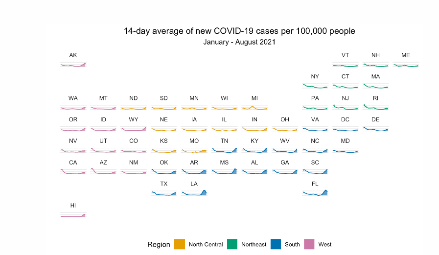
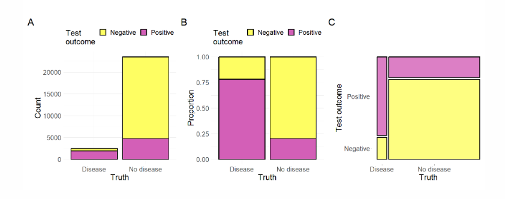
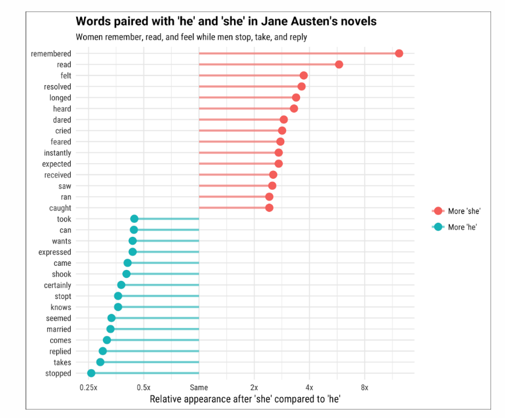
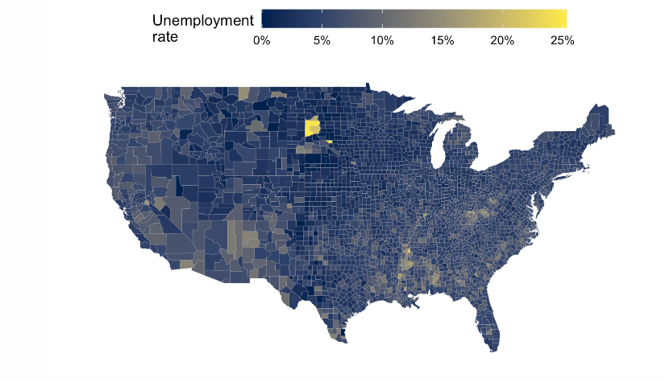
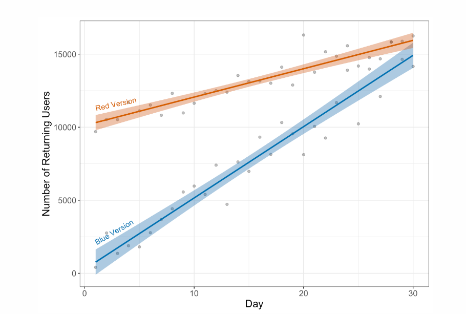
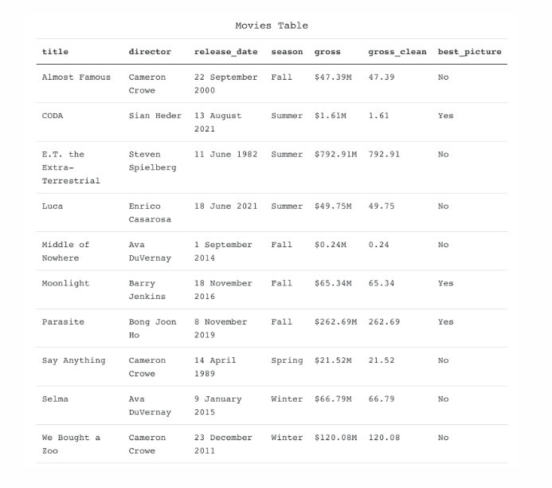
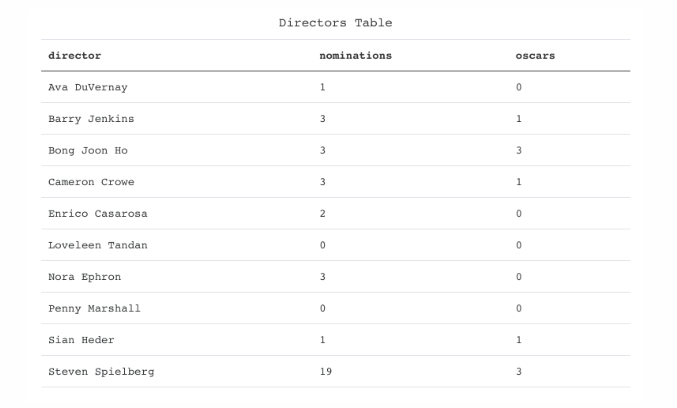

library(tidyverse)
library(janitor)
library(kableExtra)
library(gridExtra)
library(janeaustenr)
library(dplyr)
library(stringr)
library(tidytext)
library(magrittr)
library(DT)ds assessment report
Data
There are 21 participants in our data set. Of the 21 participants, 10 made it to the last question of the survey. The average time it took to complete this survey was 429.3 minutes, with 2 students taking more than 60 minutes to complete the assessment, and 2 students taking more than 120 minutes to complete the assessment.
Missing observations
Below are the percentages of missing observations by question. Questions that have at least 0.8 percent missing are highlighted in red.
| percent_missing | |
|---|---|
| storm_paths | 0.6086957 |
| storm_paths_explana | 0.6086957 |
| movie_budgets_1_1 | 0.6956522 |
| movie_budgets_1_2 | 0.6956522 |
| movie_budgets_1_3 | 0.6956522 |
| movie_budgets_1_4 | 0.6956522 |
| movie_budgets_2 | 0.6086957 |
| application_screenin | 0.6521739 |
| banana_conclusions | 0.6956522 |
| covid_map_1_2 | 0.6956522 |
| covid_map_2_2 | 0.6956522 |
| attention_check_1_2 | 0.6956522 |
| disease_screening_1 | 0.7391304 |
| disease_screening_2 | 0.7391304 |
| disease_screening_3 | 0.7391304 |
| disease_screening_4 | 0.7391304 |
| he_said_she_said_1_3 | 0.7391304 |
| he_said_she_said_1_3_3_text | 0.9130435 |
| he_said_she_said_2_3 | 0.6956522 |
| he_said_she_said_2_3_3_text | 0.9130435 |
| he_said_she_said_3_3 | 0.7391304 |
| he_said_she_said_3_3_3_text | 0.9130435 |
| build_a_plot | 0.7391304 |
| realty_tree_1_2 | 0.7391304 |
| attention_check_2_2 | 0.7391304 |
| realty_tree_2_2 | 0.7391304 |
| website_testing_1_3 | 0.7391304 |
| website_testing_2_3 | 0.7391304 |
| website_testing_3_3 | 0.7391304 |
| image_recognition1_1 | 0.7391304 |
| data_confidentiali1_1 | 0.7391304 |
| activity_journal_1_1 | 0.7391304 |
| movie_wrangling_1_6 | 0.7391304 |
| movie_wrangling_2_6 | 0.7391304 |
| movie_wrangling_3_6 | 0.7391304 |
| movie_wrangling_4_6 | 0.7391304 |
| movie_wrangling_5_6 | 0.7391304 |
| movie_wrangling_6_6 | 0.7391304 |
| time_spent | 0.7391304 |
| consent | 0.7391304 |
Percent correct - multiple choice
Below is a table that shares the percentage of correct responses across students. Questions are ordered as they appear in the survey and highlighted in red to indicate a percentage less than 0.5.
| question | mc_question_num | pct_correct |
|---|---|---|
| A data scientist at IMDb has been given a dataset comprised of the revenues and budgets for 2,349 movies made between 1986 and 2016. Suppose they want to compare several distributional features of the budgets among four different genres---Horror, Drama, Action, and Animation. To do this, they create the following plots. Fill in the following table by placing a checkmark in the cells corresponding to the attributes of the data that can be determined by examining each of the plots. - IQR | 6 | 0.1739130 |
| A data scientist at IMDb has been given a dataset comprised of the revenues and budgets for 2,349 movies made between 1986 and 2016. Suppose they want to compare several distributional features of the budgets among four different genres---Horror, Drama, Action, and Animation. To do this, they create the following plots. Fill in the following table by placing a checkmark in the cells corresponding to the attributes of the data that can be determined by examining each of the plots. - Mean | 4 | 0.1739130 |
| A data scientist at IMDb has been given a dataset comprised of the revenues and budgets for 2,349 movies made between 1986 and 2016. Suppose they want to compare several distributional features of the budgets among four different genres---Horror, Drama, Action, and Animation. To do this, they create the following plots. Fill in the following table by placing a checkmark in the cells corresponding to the attributes of the data that can be determined by examining each of the plots. - Median | 5 | 0.1739130 |
| The figure below shows a forecast after simulating 50 potential paths for a large storm. The two points (a) and (b) represent two cities. Which city is more likely to be hit by the storm? | 1 | 0.1739130 |
| A realtor has trained a regression tree to predict the price of a house from features such as number of bedrooms, number of bathrooms, number of fireplaces, and size of the living area. What price would the tree predict for a house with 1200 ft.$^2$ of living area and 1.5 bathrooms? | 3 | 0.1304348 |
| For each genre, the data scientist also fitted a regression line to model the relationship between movies' budgets and their revenues. A scatterplot of this relationship, along with the fitted regression line, is shown for each of the four genres below. For which genre would the fitted regression model produce the highest $R^2$ value? | 8 | 0.1304348 |
| An e-commerce company is working on their website design and is interested in knowing whether having the website mainly in blue or red would lead to better business outcomes. One outcome they are measuring is the number of returning users to the website. They design two versions of the website one in blue and the other in red. A random half of the visitors see the website in blue and the other half see it in red. The plot shows the number of returning users per day for the two different versions of the website. Indicate whether each of the following conclusions are valid: On the 60th day, the blue version of the website is expected to have higher number of returning users. | 18 | 0.0869565 |
| A data scientist at IMDb has been given a dataset comprised of the revenues and budgets for 2,349 movies made between 1986 and 2016. Suppose they want to compare several distributional features of the budgets among four different genres---Horror, Drama, Action, and Animation. To do this, they create the following plots. Fill in the following table by placing a checkmark in the cells corresponding to the attributes of the data that can be determined by examining each of the plots. - Shape | 7 | 0.0434783 |
| An e-commerce company is working on their website design and is interested in knowing whether having the website mainly in blue or red would lead to better business outcomes. One outcome they are measuring is the number of returning users to the website. They design two versions of the website one in blue and the other in red. A random half of the visitors see the website in blue and the other half see it in red. The plot shows the number of returning users per day for the two different versions of the website. Indicate whether each of the following conclusions are valid: On the 31st day, the blue version of the website is expected to have higher number of returning users. | 17 | 0.0434783 |
| COVID screening tests are not 100% accurate. It's possible to have COVID but not test positive or not have COVID but test positive for it. The following three visualizations display the outcomes of a COVID screening test with a sensitivity (true positive rate) of 98.1% and specificity (true negative rate) of 99.6% in a population where 5% of the individuals have COVID. We are also interested in the false positive (individuals classified as with COVID, who don't actually have it) and false negative (individuals classified as without COVID, but who do actually have it) rates. Fill in the following table by placing a checkmark in the cells corresponding to the attributes of the data that can be determined by examining each of the plots. - Sensitivity | 12 | 0.0434783 |
| A realtor has trained a regression tree to predict the price of a house from features such as number of bedrooms, number of bathrooms, number of fireplaces, and size of the living area. What price would the tree predict for a house with 3200 ft.$^2$ of living area, 1.5 bathrooms, and 1 fireplace? | 2 | 0.0000000 |
| An e-commerce company is working on their website design and is interested in knowing whether having the website mainly in blue or red would lead to better business outcomes. One outcome they are measuring is the number of returning users to the website. They design two versions of the website one in blue and the other in red. A random half of the visitors see the website in blue and the other half see it in red. The plot shows the number of returning users per day for the two different versions of the website. Indicate whether each of the following conclusions are valid: Over time the company is getting more returning users regardless of the version of the website. | 16 | 0.0000000 |
| COVID screening tests are not 100% accurate. It's possible to have COVID but not test positive or not have COVID but test positive for it. The following three visualizations display the outcomes of a COVID screening test with a sensitivity (true positive rate) of 98.1% and specificity (true negative rate) of 99.6% in a population where 5% of the individuals have COVID. We are also interested in the false positive (individuals classified as with COVID, who don't actually have it) and false negative (individuals classified as without COVID, but who do actually have it) rates. Fill in the following table by placing a checkmark in the cells corresponding to the attributes of the data that can be determined by examining each of the plots. - False negative rate | 15 | 0.0000000 |
| COVID screening tests are not 100% accurate. It's possible to have COVID but not test positive or not have COVID but test positive for it. The following three visualizations display the outcomes of a COVID screening test with a sensitivity (true positive rate) of 98.1% and specificity (true negative rate) of 99.6% in a population where 5% of the individuals have COVID. We are also interested in the false positive (individuals classified as with COVID, who don't actually have it) and false negative (individuals classified as without COVID, but who do actually have it) rates. Fill in the following table by placing a checkmark in the cells corresponding to the attributes of the data that can be determined by examining each of the plots. - False positive rate | 14 | 0.0000000 |
| COVID screening tests are not 100% accurate. It's possible to have COVID but not test positive or not have COVID but test positive for it. The following three visualizations display the outcomes of a COVID screening test with a sensitivity (true positive rate) of 98.1% and specificity (true negative rate) of 99.6% in a population where 5% of the individuals have COVID. We are also interested in the false positive (individuals classified as with COVID, who don't actually have it) and false negative (individuals classified as without COVID, but who do actually have it) rates. Fill in the following table by placing a checkmark in the cells corresponding to the attributes of the data that can be determined by examining each of the plots. - Specificity | 13 | 0.0000000 |
| For each of the following items, indicate whether the statement is TRUE, FALSE, or whether you would need additional information to determine this. If you need additional information to make that determination, indicate what else you would need. Men in Austen's novels are more likely to have 'dared', 'expected', and 'ran' than women. - Selected Choice | 9 | 0.0000000 |
| For each of the following items, indicate whether the statement is TRUE, FALSE, or whether you would need additional information to determine this. If you need additional information to make that determination, indicate what else you would need. Women in Austen's novels are more likely to have 'remembered' than 'feared'. - Selected Choice | 11 | 0.0000000 |
| For each of the following items, indicate whether the statement is TRUE, FALSE, or whether you would need additional information to determine this. If you need additional information to make that determination, indicate what else you would need. Women in Austen's novels are more likely to have 'remembered', 'felt', and 'cried' than men. - Selected Choice | 10 | 0.0000000 |
| The following is an intensity map of the unemployment rate among adults in the counties in the United States (based on data from 2019). Indicate which of the following data you need to recreate this map: (Select all that apply.) | 19 | 0.0000000 |

17 students failed at least one of the attention checks in the survey. 7 students completed the assessment in 5 minutes or less. These data have been filtered out for this report.
assessment_clean <- assessment |>
slice(-c(1:2)) |>
filter(attention_check_1_2 == "I am passing this attention check" &
attention_check_2_2 == "$262,972" &
duration_in_seconds <= 300) note to self change data set to assessment_clean below when creaing real report
Storm paths
The figure below shows a forecast after simulating 50 potential paths for a large storm. The two points (a) and (b) represent two cities. Which city is more likely to be hit by the storm?

Question: Which city is more likely to be hit by the storm?
| storm_paths | n | prop |
|---|---|---|
| City a | 4 | 0.57 |
| City b | 3 | 0.43 |
| storm_paths | n | prop |
|---|---|---|
| City a | 4 | 0.19 |
| City b | 3 | 0.14 |
| NA | 14 | 0.67 |
Explain
Raw responses
There are 14 missing observations for this question. Complete responses can be seen below.
| storm_paths | storm_paths_explana |
|---|---|
| City a | More of the paths pass by/through A than B |
| City a | it sits in-between a larger number of the paths |
| City a | There are more simulated storm lines near City a. Therfore, I think that City a is more likely to be hit by the storm. |
| City a | There are a lot more lines close to a, and the storm is not guarenteed to follow one of these lines. It is a higher chance of going through a. |
| City b | B is directly in one of the paths. A is in the middle of many, but does not find itself directly on any. |
| City b | It is on a path, whereas A is not |
| City b | I see one line going through it so I think it will hit that |
Movie budgets
A data scientist at IMDb has been given a dataset comprised of the revenues and budgets for 2,349 movies made between 1986 and 2016. Suppose they want to compare several distributional features of the budgets among four different genres—Horror, Drama, Action, and Animation. To do this, they create the following plots.

Question: Fill in the following table by placing a checkmark in the cells corresponding to the attributes of the data that can be determined by examining each of the plots.
Note: Combinations of answers that do not appear in the table were not selected by students.
Mean
| movie_budgets_1_1 | n | prop |
|---|---|---|
| Plot A | 4 | 0.8 |
| Plot A,Plot B | 1 | 0.2 |
| movie_budgets_1_1 | n | prop |
|---|---|---|
| Plot A | 4 | 0.19 |
| Plot A,Plot B | 1 | 0.05 |
| NA | 16 | 0.76 |
Median
| movie_budgets_1_2 | n | prop |
|---|---|---|
| Plot C | 1 | 0.2 |
| Plot D | 4 | 0.8 |
| movie_budgets_1_2 | n | prop |
|---|---|---|
| Plot C | 1 | 0.05 |
| Plot D | 4 | 0.19 |
| NA | 16 | 0.76 |
IQR
| movie_budgets_1_3 | n | prop |
|---|---|---|
| Plot C | 1 | 0.2 |
| Plot D | 4 | 0.8 |
| movie_budgets_1_3 | n | prop |
|---|---|---|
| Plot C | 1 | 0.05 |
| Plot D | 4 | 0.19 |
| NA | 16 | 0.76 |
Shape
| movie_budgets_1_4 | n | prop |
|---|---|---|
| Plot A,Plot D | 1 | 0.2 |
| Plot B | 2 | 0.4 |
| Plot B,Plot C,Plot D | 1 | 0.2 |
| Plot B,Plot D | 1 | 0.2 |
| movie_budgets_1_4 | n | prop |
|---|---|---|
| Plot A,Plot D | 1 | 0.05 |
| Plot B | 2 | 0.10 |
| Plot B,Plot C,Plot D | 1 | 0.05 |
| Plot B,Plot D | 1 | 0.05 |
| NA | 16 | 0.76 |
Movie bugets 2
Question: For each genre, the data scientist also fitted a regression line to model the relationship between movies’ budgets and their revenues. A scatterplot of this relationship, along with the fitted regression line, is shown for each of the four genres below. For which genre would the fitted regression model produce the highest \(R^2\) value?

| movie_budgets_2 | n | prop |
|---|---|---|
| Action | 2 | 0.29 |
| Animation | 2 | 0.29 |
| Horror | 3 | 0.43 |
| movie_budgets_2 | n | prop |
|---|---|---|
| Action | 2 | 0.10 |
| Animation | 2 | 0.10 |
| Horror | 3 | 0.14 |
| NA | 14 | 0.67 |
Application Screening
Question: You are working on a team that is making a deterministic model to quickly screen through applications for a new position at the company. Based on employment laws, your model may not include variables such as age, race, and gender, which could be potentially discriminatory.
Your colleague suggests including a rule that eliminates candidates with more than 20 years of previous work experience, because they may have high salary expectations. Are there ethical implications of using this variable to select candidates?
Explain your answer.
Raw responses
There are 15 missing observations for this question. Complete responses can be seen below.
| application_screenin |
|---|
| I do believe there are ethical concerns with the colleague's suggestion. Providing no opportunity to those with an abundence of experience is excluding part of the hiring pool on a variable that is not indicative of how qualified they are for the position. |
| I do not see any issues with this. If this is who the company is looking to hire, then they should be able to use an experience indicator variable to subset their hiring pool. |
| I don't think it is ethical to exclude a part of the hiring population based on a variable of inexperience. This feels like unequal opportunity of empolyment. |
| Yes -- affects age variable, also odd to filter people based on salary expectation -- only give offers to those who accept salary terms ? |
| tesstsdhd |
| yeah 20 years of experience is a long time and most likely includes older people. this is discriminating against older people probably. |
Banana conclusions
Question: Data scientists at FiveThirtyEight administered a food frequency questionnaire. With 54 complete responses they found that people who ate bananas tended to score higher on the SAT verbal section than the SAT math section (\(p-value =0.0073\)). An article reporting the results of this study has the headline, “Eat more bananas to score higher on the SAT verbal section”.
Explain why this title is misleading.
Raw responses
There are 16 missing observations for this question. Complete responses can be seen below.
| banana_conclusions |
|---|
| Correlation does not imply causation. That doesn't make sense. |
| Correlation is not causation -- more bananas could be based on region or SE status or health consciousness or family dynamic or parental care -- third variable problem |
| I don't think you can say that eating something, like bananas, leads to or causes higher test scores. Therfore, the title is misleading. |
| This is misleading because correlation does not imply causation. |
| questionnaires cannot be used to determine causality; it's very possible there is a 3rd unconsidered confounding variable where someone who is already inclined to score high also happens to eat bananas for whatever reason |
Covid map
Question: The visualization below displays the 14-day rolling average of new COVID-19 cases January 1 - August 31, 2021 in the United States. Each plot represents a state or Washington, D.C., and is labeled using the state’s abbreviation (e.g., MA = Massachusetts). The shaded area under each curve represents the increase in new cases since the state’s minimum point in 2021. This is a recreation of a similar plot that originally appeared in the New York Times.

What do we learn from this plot about COVID-19 cases in the US?
Raw responses
There are 16 missing observations for this question. Complete responses can be seen below.
| covid_map_1_2 |
|---|
| In order from most to least new covid cases: states in the South, West, North Central, and Northeast -- FL among the highest, ME and MD among the lowest |
| It appears that the South region had more covid cases at the end of the rolling average. |
| The plot is hard to read. It looks like we learn that most states have some spikes of new cases closer to August versus January. |
| We learn that the sound seemingly had higher spikes than other regions, and most spikes happened in August. |
| the whole country experienced a dip then rise in covid cases |
Covid map 2
Question: The visualization below displays the 14-day rolling average of new COVID-19 cases January 1 - August 31, 2021 in the United States. Each plot represents a state or Washington, D.C., and is labeled using the state’s abbreviation (e.g., MA = Massachusetts). The shaded area under each curve represents the increase in new cases since the state’s minimum point in 2021. This is a recreation of a similar plot that originally appeared in the New York Times.
Compare KY (Kentucky) in the South region to CA (California) in the West region.Based on this plot, can we conclude there was a difference in overall number of COVID cases in KY and CA in August 2021? Explain.
Raw responses
There are 16 missing observations for this question. Complete responses can be seen below.
| covid_map_2_2 |
|---|
| Data seems to be fitted to a single y-axis across plots, but only shows new COVID cases -- would need original number to compare |
| I'm not sure how to interpret the total number with no y-axis. However, KY has a higher density of cases than CA, so it may be plausible to make this conclusion if the y-axis is consistent across all states. |
| It is hard to come to this conclusion without know the y-axis for KY and CA. If they are not on the same scale, we can not conclude this. If they are, it appears that Kentucky and CA are different. |
| We can not conclude that. We have no way of knowing the baseline for each state. This graph is misleading. |
| no; the shading is in reference to the state's minimum point in 2021. without knowing the absolute number of that minimum point for both states, we cannot compare overall numbers of covid cases |
Medical screening
Medical screening tests are not 100% accurate. It’s possible to have a disease but not test positive or not have a disease but test positive for it. The following three visualizations display the outcomes of a medical screening test with a sensitivity (true positive rate) of 78.2% and specificity (true negative rate) of 79.6% in a population where 10% of the individuals have the disease.
We are also interested in the false positive (individuals classified as with a disease, who don’t actually have it) and false negative (individuals classified as without a disease, but who do actually have it) rates.

Question: Fill in the following table by placing a checkmark in the cells corresponding to the attributes of the data that can be determined by examining each of the plots.
Note: Combinations of answers that do not appear in the table were not selected by students
Sensitivity
| disease_screening_1 | n | prop |
|---|---|---|
| Plot A | 2 | 0.50 |
| Plot A,Plot C | 1 | 0.25 |
| Plot B | 1 | 0.25 |
| disease_screening_1 | n | prop |
|---|---|---|
| Plot A | 2 | 0.10 |
| Plot A,Plot C | 1 | 0.05 |
| Plot B | 1 | 0.05 |
| NA | 17 | 0.81 |
Specificity
| disease_screening_2 | n | prop |
|---|---|---|
| Plot A | 2 | 0.50 |
| Plot A,Plot B | 1 | 0.25 |
| Plot C | 1 | 0.25 |
| disease_screening_2 | n | prop |
|---|---|---|
| Plot A | 2 | 0.10 |
| Plot A,Plot B | 1 | 0.05 |
| Plot C | 1 | 0.05 |
| NA | 17 | 0.81 |
False positive rate
| disease_screening_3 | n | prop |
|---|---|---|
| Plot B | 2 | 0.5 |
| Plot B,Plot C | 2 | 0.5 |
| disease_screening_3 | n | prop |
|---|---|---|
| Plot B | 2 | 0.10 |
| Plot B,Plot C | 2 | 0.10 |
| NA | 17 | 0.81 |
False negative rate
| disease_screening_4 | n | prop |
|---|---|---|
| Plot B | 1 | 0.25 |
| Plot B,Plot C | 3 | 0.75 |
| disease_screening_4 | n | prop |
|---|---|---|
| Plot B | 1 | 0.05 |
| Plot B,Plot C | 3 | 0.14 |
| NA | 17 | 0.81 |
He said she said
Question For each of the following items, indicate whether the statement is TRUE, FALSE, or whether you would need additional information to determine this. If you need additional information to make that determination, indicate what else you would need.

Men in Austen’s novels are more likely to have ‘dared’, ‘expected’, and ‘ran’ than women.
| he_said_she_said_1_3 | n | prop |
|---|---|---|
| FALSE | 4 | 1 |
| he_said_she_said_1_3 | n | prop |
|---|---|---|
| FALSE | 4 | 0.19 |
| NA | 17 | 0.81 |
Need additional information to determine this (text)
There are 21 missing observations for this question. Complete responses can be seen below.
| he_said_she_said_1_3_3_text |
|---|
He said she said 2
Question For each of the following items, indicate whether the statement is TRUE, FALSE, or whether you would need additional information to determine this. If you need additional information to make that determination, indicate what else you would need.
Women in Austen’s novels are more likely to have ‘remembered’, ‘felt’, and ‘cried’ than men.
| he_said_she_said_2_3 | n | prop |
|---|---|---|
| FALSE | 1 | 0.2 |
| TRUE | 4 | 0.8 |
| he_said_she_said_2_3 | n | prop |
|---|---|---|
| FALSE | 1 | 0.05 |
| TRUE | 4 | 0.19 |
| NA | 16 | 0.76 |
Need additional information to determine this (text)
There are 21 missing observations for this question. Complete responses can be seen below.
| he_said_she_said_2_3_3_text |
|---|
He said she said 3
Question For each of the following items, indicate whether the statement is TRUE, FALSE, or whether you would need additional information to determine this. If you need additional information to make that determination, indicate what else you would need.
Women in Austen’s novels are more likely to have ‘remembered’ than ‘feared’.
| he_said_she_said_3_3 | n | prop |
|---|---|---|
| FALSE | 1 | 0.25 |
| TRUE | 3 | 0.75 |
| he_said_she_said_3_3 | n | prop |
|---|---|---|
| FALSE | 1 | 0.05 |
| TRUE | 3 | 0.14 |
| NA | 17 | 0.81 |
Need additional information to determine this (text)
There are 21 missing observations for this question. Complete responses can be seen below.
| he_said_she_said_3_3_3_text |
|---|
Build a plot
The following is an intensity map of the unemployment rate among adults in the counties in the United States (based on data from 2019).

Question: Indicate which of the following data you need to recreate this map: (Select all that apply.)
Note Answers or combinations of answers that do not appear in the plot were not selected by students.
| build_a_plot | n | prop |
|---|---|---|
| County boundaries,Number of adults living in each county,Number of unemployed adults living in each county | 1 | 0.25 |
| County boundaries,Number of unemployed adults living in each county,Total population of the county | 1 | 0.25 |
| County boundaries,Unemployment rate in each county | 1 | 0.25 |
| County boundaries,Unemployment rate in each county,Number of adults living in each county,Number of unemployed adults living in each county,Total population of the county | 1 | 0.25 |
| build_a_plot | n | prop |
|---|---|---|
| County boundaries,Number of adults living in each county,Number of unemployed adults living in each county | 1 | 0.05 |
| County boundaries,Number of unemployed adults living in each county,Total population of the county | 1 | 0.05 |
| County boundaries,Unemployment rate in each county | 1 | 0.05 |
| County boundaries,Unemployment rate in each county,Number of adults living in each county,Number of unemployed adults living in each county,Total population of the county | 1 | 0.05 |
| NA | 17 | 0.81 |
Realty tree
A realtor has trained a regression tree to predict the price of a house from features such as number of bedrooms, number of bathrooms, number of fireplaces, and size of the living area.

Question: What price would the tree predict for a house with \(3200 ft.^2\) of living area, 1.5 bathrooms, and 1 fireplace?
| realty_tree_1_2 | n | prop |
|---|---|---|
| $326,267 | 1 | 0.25 |
| $501,876 | 1 | 0.25 |
| Can't be determined from the information given. | 2 | 0.50 |
| realty_tree_1_2 | n | prop |
|---|---|---|
| $326,267 | 1 | 0.05 |
| $501,876 | 1 | 0.05 |
| Can't be determined from the information given. | 2 | 0.10 |
| NA | 17 | 0.81 |
Realty tree 2
A realtor has trained a regression tree to predict the price of a house from features such as number of bedrooms, number of bathrooms, number of fireplaces, and size of the living area.
Question: What price would the tree predict for a house with 1200 ft.\(^2\) of living area and 1.5 bathrooms?
| realty_tree_2_2 | n | prop |
|---|---|---|
| $151,424 | 3 | 0.75 |
| $210,950 | 1 | 0.25 |
| realty_tree_2_2 | n | prop |
|---|---|---|
| $151,424 | 3 | 0.14 |
| $210,950 | 1 | 0.05 |
| NA | 17 | 0.81 |
Website testing
An e-commerce company is working on their website design and is interested in knowing whether having the website mainly in blue or red would lead to better business outcomes. One outcome they are measuring is the number of returning users to the website. They design two versions of the website one in blue and the other in red. A random half of the visitors see the website in blue and the other half see it in red. The plot shows the number of returning users per day for the two different versions of the website.

Indicate whether each of the following conclusions are valid:
Question: Over time the company is getting more returning users regardless of the version of the website.
| website_testing_1_3 | n | prop |
|---|---|---|
| Invalid | 1 | 0.25 |
| Valid | 3 | 0.75 |
| website_testing_1_3 | n | prop |
|---|---|---|
| Invalid | 1 | 0.05 |
| Valid | 3 | 0.14 |
| NA | 17 | 0.81 |
Website training 2
An e-commerce company is working on their website design and is interested in knowing whether having the website mainly in blue or red would lead to better business outcomes. One outcome they are measuring is the number of returning users to the website. They design two versions of the website one in blue and the other in red. A random half of the visitors see the website in blue and the other half see it in red. The plot shows the number of returning users per day for the two different versions of the website.
Indicate whether each of the following conclusions are valid:
Question: On the 31st day, the blue version of the website is expected to have higher number of returning users.
| website_testing_2_3 | n | prop |
|---|---|---|
| Cannot determine from this plot | 3 | 0.75 |
| Valid | 1 | 0.25 |
| website_testing_2_3 | n | prop |
|---|---|---|
| Cannot determine from this plot | 3 | 0.14 |
| Valid | 1 | 0.05 |
| NA | 17 | 0.81 |
Website testing 3
An e-commerce company is working on their website design and is interested in knowing whether having the website mainly in blue or red would lead to better business outcomes. One outcome they are measuring is the number of returning users to the website. They design two versions of the website one in blue and the other in red. A random half of the visitors see the website in blue and the other half see it in red. The plot shows the number of returning users per day for the two different versions of the website.
Indicate whether each of the following conclusions are valid:
Question: On the 60th day, the blue version of the website is expected to have higher number of returning users.
| website_testing_2_3 | n | prop |
|---|---|---|
| Cannot determine from this plot | 3 | 0.14 |
| Valid | 1 | 0.05 |
| NA | 17 | 0.81 |
| website_testing_3_3 | n | prop |
|---|---|---|
| Cannot determine from this plot | 2 | 0.10 |
| Invalid | 1 | 0.05 |
| Valid | 1 | 0.05 |
| NA | 17 | 0.81 |
Image recognition
A data science student wants to create an image recognition algorithm to identify whether a university professor belongs to a department in the sciences or not. To do this, she collects data by scraping several university photo archives of university faculty. She labels faculty in the photos as “Sciences” or “Not sciences”. The images below depict a small representative sample of her data.
Question: The data science student plans to use these photos of current university faculty to predict whether they are scientists. What concerns might you have about the predictions from this algorithm?
Explain:
Raw responses
There are 17 missing observations for this question. Complete responses can be seen below.
| image_recognition1_1 |
|---|
| Bad race and gender divide |
| There appears to be groups within these data that are classified as Sciences vs Not sciences. These photos may train a model to predict that those of color can not be in the sciences, causing me to have ethical concerns around the predictions. |
| These data make train the model to not include anyone of color in the sciences, which we know to be absurd. |
| These data may lead to model predictions that have a clear racial bias when predicting sciences vs non sciences. |
Data confidential
Question: A newspaper reports on the results of a survey from a small (<2000 student) university. The university agrees to have the data released to the public so long as the students’ identities and academic standing information are kept confidential. Select the safe combination of variables that are unlikely to identify any individual
Warning: Unknown or uninitialised column: `data_confidentialil_1`.| data_confidentiali1_1 | n | prop |
|---|---|---|
| Class year and sports played | 1 | 0.25 |
| GPA and major | 1 | 0.25 |
| None of the above | 2 | 0.50 |
| data_confidentiali1_1 | n | prop |
|---|---|---|
| Class year and sports played | 1 | 0.05 |
| GPA and major | 1 | 0.05 |
| None of the above | 2 | 0.10 |
| NA | 17 | 0.81 |
Activity journal
Below is data that was recorded in an activity journal
Question: A data scientist reformats the data into a table so that each variable represented in the data is recorded in a single column. Describe what each of the columns of this table will contain, as well as what each row or observation of the table will represent.
Raw responses
There are 17 missing observations for this question. Complete responses can be seen below.
| activity_journal_1_1 |
|---|
| Day, exercise, date, goals met Each observation represents a day observed on this individual |
| We would have a day, activity, stand goal, exercise goal, and move goal column. Each row is an observation of the individual. |
| You would have the variables day, exercise, calories, stand goal, exercise goal, move goal, and date. Each row represents an activity log from this individual. |
| date, cals burned, activity type, stand goal, exercise goal, move goal (met/not met) |
Movie wrangling
The table below provides data about 10 movies released in the United States. It provides data on the movie’s title (title), the movie’s director (director), the date the movie was released (release_date), the season the movie was released (season), the worldwide gross intake in U.S. dollars (gross), the cleaned version of the worldwide gross intake in U.S. dollars (gross_clean), and whether or not the movie won the Best Picture Oscar (best_picture).

Question: Describe a process that you could use to generate the data in the season column using the information in the release_date column.
Raw responses
There are 17 missing observations for this question. Complete responses can be seen below.
| movie_wrangling_1_6 |
|---|
| I would categorize each month into 1 of the 4 seasons, and then use a case_when statement that would observe the release_date column, and fill in the correct season in the season column |
| I would categorize the months into specific seasons, and use matching to generale the season column |
| You could specify a group of months that corrospond to a given season. Then, generate the season information based on which month was identified in the release date column. You could do this by search for the specific month text strings. |
| use month and date and divide into four seasons using conditionals |
Movie wrangling 2
The table below provides data about 10 movies released in the United States. It provides data on the movie’s title (title), the movie’s director (director), the date the movie was released (release_date), the season the movie was released (season), the worldwide gross intake in U.S. dollars (gross), the cleaned version of the worldwide gross intake in U.S. dollars (gross_clean), and whether or not the movie won the Best Picture Oscar (best_picture).
Question: Describe a process that you could use to generate the data in the gross_clean column using the information in the gross column.
Raw responses
There are 17 missing observations for this question. Complete responses can be seen below.
| movie_wrangling_2_6 |
|---|
| All you need to do is remove the $ and M |
| I would remove the text strings of $ and M |
| You could strip off the $ and the M text strings in the gross column to generate the gross clean column. |
| remove $ and M and convert to numeric |
Movie wrangling 3
The table below provides data about 10 movies released in the United States. It provides data on the movie’s title (title), the movie’s director (director), the date the movie was released (release_date), the season the movie was released (season), the worldwide gross intake in U.S. dollars (gross), the cleaned version of the worldwide gross intake in U.S. dollars (gross_clean), and whether or not the movie won the Best Picture Oscar (best_picture).
Question: You have been tasked with adding a new column called nominated_for_best_picture which indicates whether or not each movie was nominated for the Best Picture Oscar (“Yes” if it was, “No” if it was not). Is there sufficient information in this dataset to generate this new column? Explain.
Raw responses
There are 17 missing observations for this question. Complete responses can be seen below.
| movie_wrangling_3_6 |
|---|
| No. Movies that did not win may have never been nominated in the first place. |
| There is not enough information here. We have if a movie won best picture, but multiple pictures are nominated for the award, and we have no way of knowing if movies that did not win best picture were even nominated. |
| Yes. I'm going to assume that if they were not nominated, that it would be represented by an NA. I don't think it makes sense to say they lost if they never had the chance to win. So, we could use the No and Yes values to indicate nominated. |
| no -- only whether they won -- no other way to determine nomination than the nomination itself |
Movie wrangling 4
The table below provides data about 10 movie directors. It provides data on the director’s name (director), the number of Oscars the movie’s director has been nominated for (nominations), and the number of Oscars the director has won (oscars).

Question: Use the data in the Movies Table and in the Directors Table to answer the following questions. For each question, what is the result of carrying out the given pseudocode (ie. code recipe)?
START_WITH(the Movies table) then
KEEP_ROWS_WHERE(the season value is Fall) then
COUNT(the number of rows)
Raw responses
There are 17 missing observations for this question. Complete responses can be seen below.
| movie_wrangling_4_6 |
|---|
| 4 |
| This code would produce a frequency table that counted up the number of Fall seasons in the data set |
| This code would return the number movies that had "Fall" as their season input. |
| We would start with the movies table, subset it by the rows that had the value of Fall in the season column, and make a table counting them up |
Movie wrangling 5
The table below provides data about 10 movie directors. It provides data on the director’s name (director), the number of Oscars the movie’s director has been nominated for (nominations), and the number of Oscars the director has won (oscars).
Question: Use the data in the Movies Table and in the Directors Table to answer the following questions. For each question, what is the result of carrying out the given pseudocode (ie. code recipe)?
START_WITH(the Movies table) then
KEEP_ROWS_WHERE(the season value is Fall) then
COUNT(the number of rows) WHERE( best_picture value is Yes)
Raw responses
There are 17 missing observations for this question. Complete responses can be seen below.
| movie_wrangling_5_6 |
|---|
| 4 |
| Same question twice? |
| This code would produce a frequency table that counted up the number of Fall seasons in the data set |
| We would start with the movies table, subset it by the rows that had the value of Fall in the season column, and make a table counting them up |
Movie wrangling 6
The table below provides data about 10 movie directors. It provides data on the director’s name (director), the number of Oscars the movie’s director has been nominated for (nominations), and the number of Oscars the director has won (oscars).
Question: Use the data in the Movies Table and in the Directors Table to answer the following questions. For each question, what is the result of carrying out the given pseudocode (ie. code recipe)?
START_WITH(the Movies table) then
KEEP_ROWS_WHERE(the season value is Fall then
ADD_COLUMNS_FROM(the Director Table) MATCHING_BY(the director column) then
COUNT(the number of rows) WHERE(oscars value is 3) AND(best_picture value is No)
Raw responses
There are 17 missing observations for this question. Complete responses can be seen below.
| movie_wrangling_6_6 |
|---|
| 4 |
| Same question ? |
| This code would produce a frequency table that counted up the number of Fall seasons in the data set |
| We would start with the movies table, subset it by the rows that had the value of Fall in the season column, and make a table counting them up |